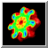
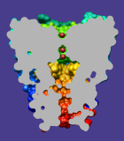

Surface Capping 

Surface Capping draws planar caps that hide the interior of a
surface model
sliced by a clipping plane.
Surface Capping information is included in saved
sessions.
See also:
Surface Color,
Color Zone,
clip,
mclip
There are several ways to start
Surface Capping, a tool in the Depiction and
Surface/Binding Analysis categories. It can also be called from the
Side View and
Per-Model Clipping dialogs.
Options:
- Cap surfaces at clip planes
- whether to show caps
- Use cap color
[color well]
- whether to use the
color well
color for caps. Otherwise, cap color will be:
- for molecular surfaces,
the model-level color of the corresponding molecule model
(see coloring hierarchy)
- for other surface models, the surface color in single-color mode
This option is ignored when caps are colored with
Surface Color.
- Cap style
- Mesh subdivision factor [f]
- how finely to subdivide cap surfaces. By default,
f=1.0, which makes cap triangles
approximately the same size as triangles in the surface being capped.
Larger values of f yield smaller triangles
and finer color gradations (when the cap is multicolored
with Surface Color),
but increase computational demands.
There is no reason to increase the subdivision factor when caps
are a single solid color.
The number of cap triangles scales as f 2;
a very high subdivision factor (f>10) can make
cap calculation extremely slow and cause Chimera to run out of memory and
crash.
- Cap to clip plane distance [d]
- the cap must be offset at least slightly from the clipping plane
(d=0.01 by default). Without an offset,
the cap itself can be clipped (invisible) depending on floating-point
rounding errors and the specific graphics hardware being used.
If d is large, however, the mismatch between the cap and the
cut edge of the surface will be evident.
Changes in numerical parameters take effect after return
(Enter) is pressed. Caps are recalculated automatically
when the clipping plane is moved, the surface is moved relative
to the clipping plane, or the shape of the surface changes.
Exceptions: a change in the resolution of a
Multiscale
Models surface or the shape of a
molecular surface
(MSMS model) may not trigger a cap update.
An update can be triggered by moving the clipping plane slightly
or toggling the Cap surfaces at clip planes
option.
LIMITATIONS
Lack of per-model settings.
The settings apply to all surfaces. It is not possible to cap
one surface but not another, or to use different colors, styles,
or other capping parameters for different surfaces.
This is a limitation of the user interface, not the underlying implementation.
Slow interactive rotation.
Rotating the model causes the cap calculation to check if the near
clipping plane intersects the surface at each frame of the rotation.
This can slow down interactive rotation.
Artifacts in cap.
Artifacts such as streaks and dots in a cap can occur when
points in the border are very close together. Slight changes in
the surface shape or the position of clipping plane relative to the
surface will generally solve the problem.
Surfaces with a boundary.
The cap calculation assumes that the intersection of the clipping plane
and the surface forms closed loops. If the surface has a boundary
(for example, a isosurface might end abruptly at the edge of the
corresponding volume data), then its intersection with the clipping
plane may form a non-closed curve, which will not be capped. The
basic difficulty in this case is that the surface does not separate
its interior from its exterior.
UCSF Computer Graphics Laboratory / March 2009